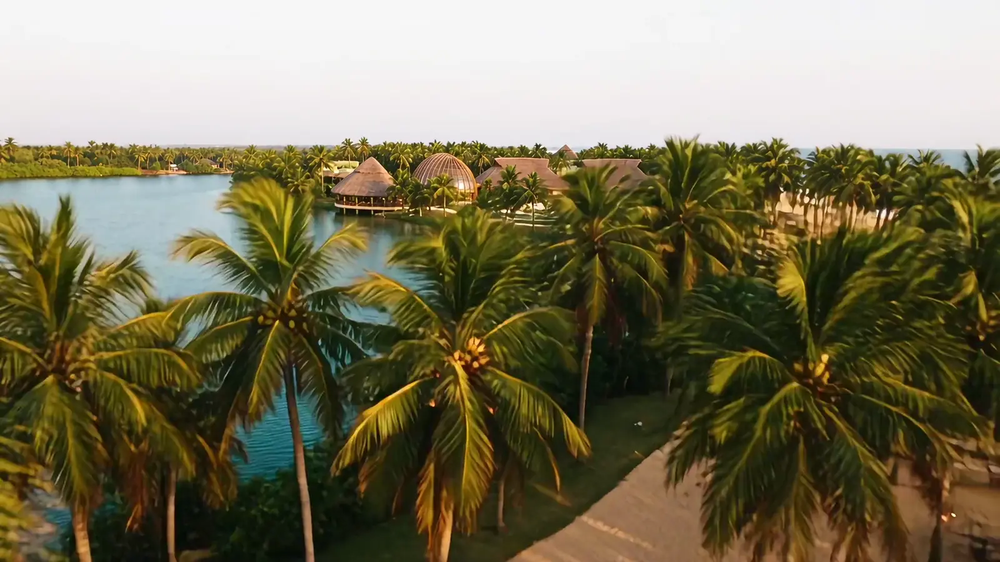
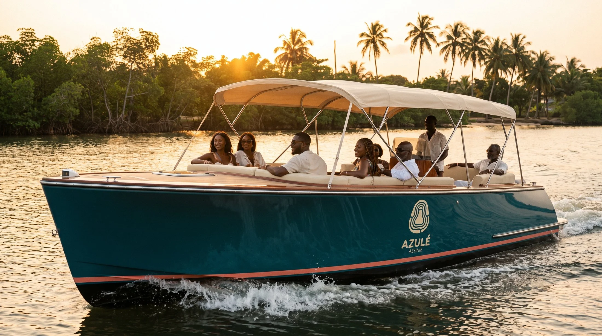
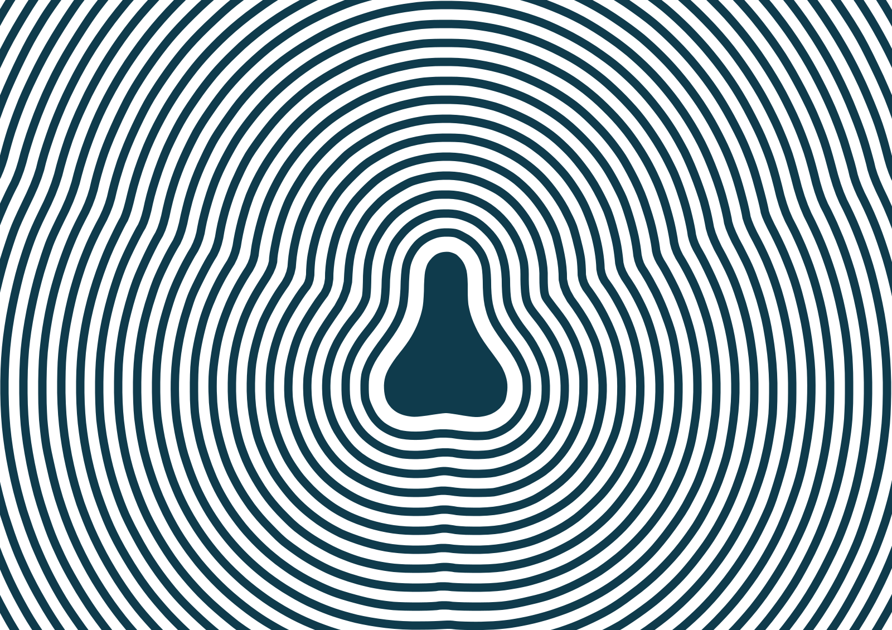
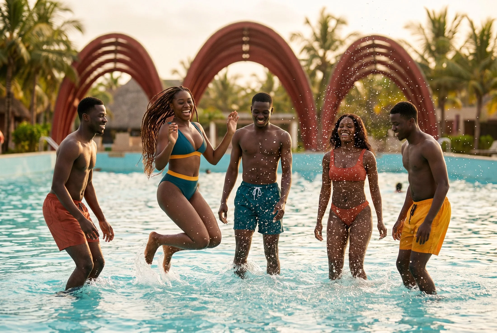
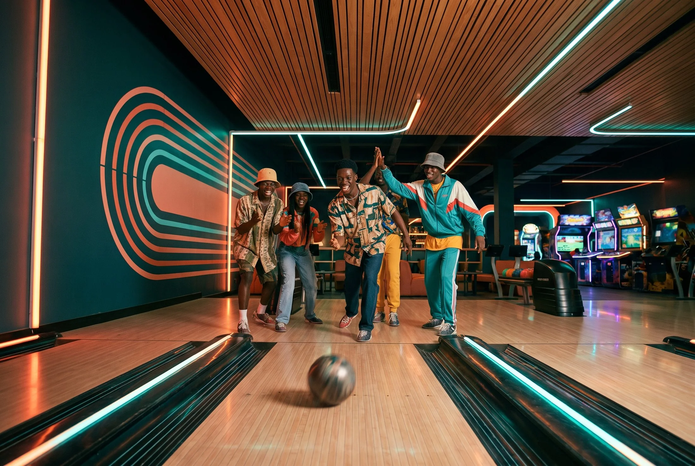
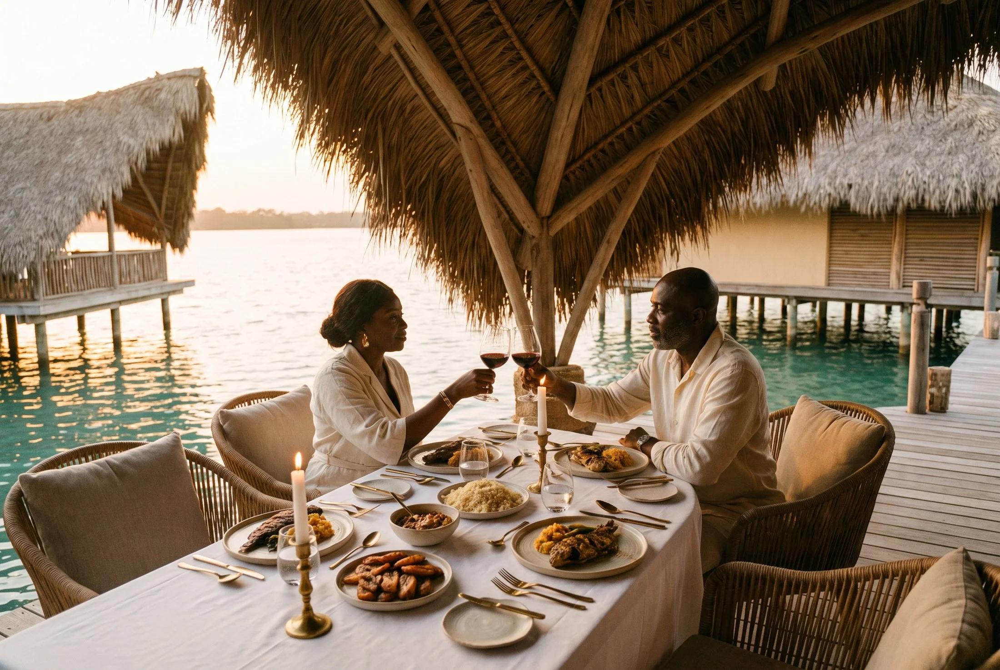
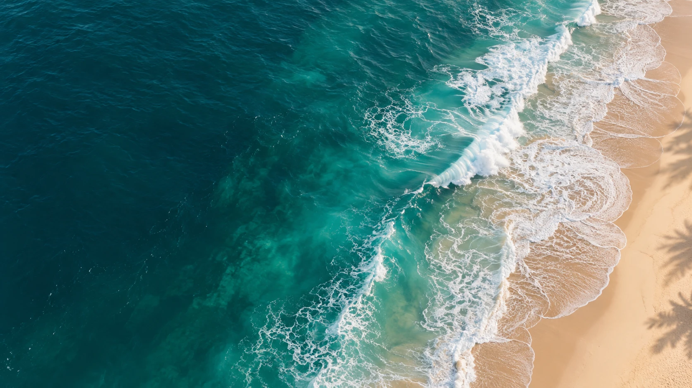
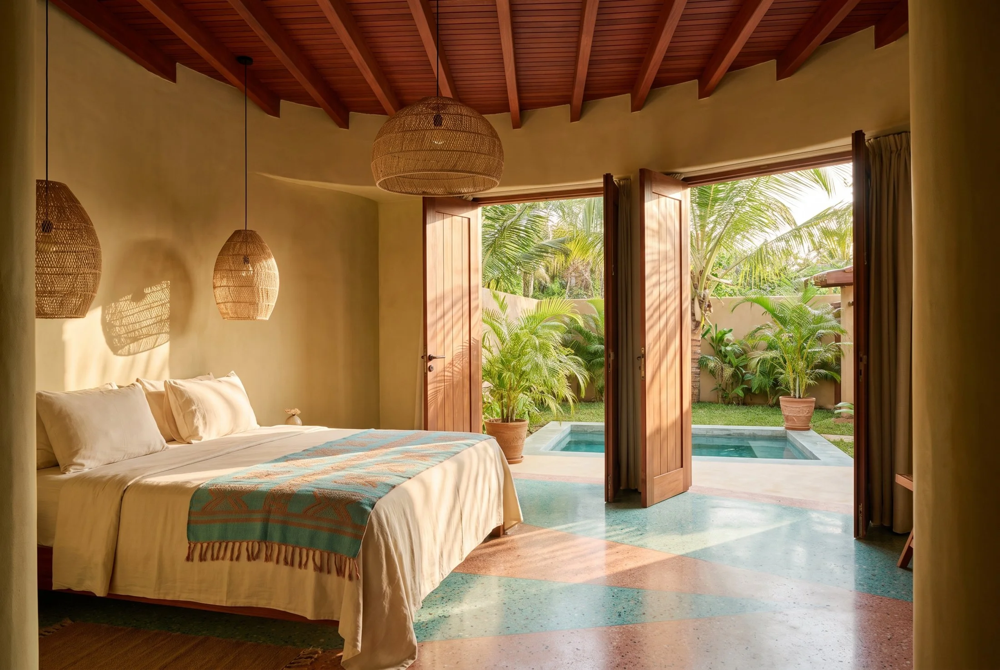
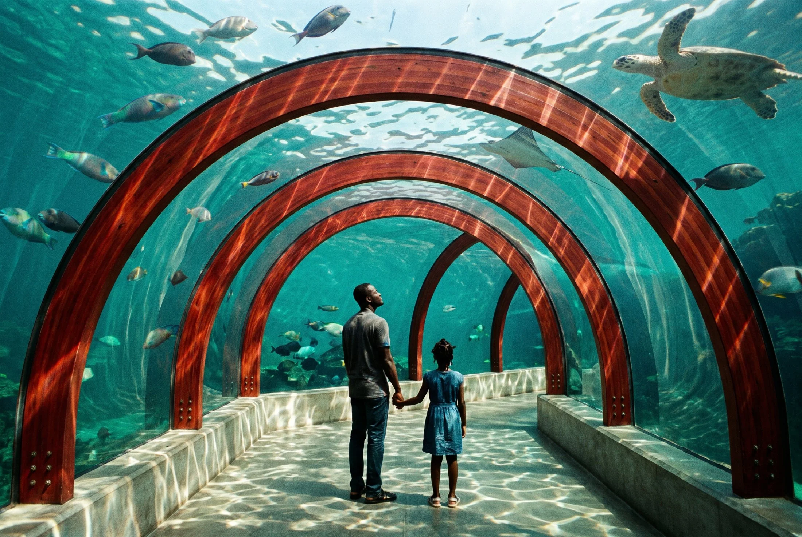

L’OCÉAN,autrement.
Le goût du large.
La joie d’être ensemble.
la vague
Il y a des lieux
qui changent
le rythme.
La lagune d’un côté.
L’Atlantique de l’autre.
Et vous, juste au bon endroit.
À Assinie, AZULÉ imagine une destination où toutes les générations se retrouvent. Un même rivage pour l’énergie des grands jours et la douceur des moments à soi.
« AZULÉ » signifie « l’océan » en nzima.
Un nom qui vient d’ici. Une invitation ouverte à tous.

Déjà,
on respire.

PLONGE.JOUE.SAVOURE.
Les cheveux mouillés.
Les éclats de rire.
La journée qui déborde.
LE BONHEUR
FAIT DES
VAGUES.
Une piscine à vagues, des toboggans, une rivière lente. Ici, chacun trouve son courant.

ENCORE
UNE
PARTIE ?
Du bowling à la réalité virtuelle, des terrains de sport aux jeux des plus petits : le plaisir de jouer n’a pas d’âge.

À vous de jouerLE GOÛT
DE RESTER
À TABLE.
Sous la grande paillote ou au food court, la gourmandise se partage. La Côte d’Ivoire dans l’assiette, la lagune en toile de fond.

Savoure lentement
Une nuit.
Ou juste
encore une.
Des chambres ouvertes sur la nature. Des suites familiales avec leur jardin privatif. Une hospitalité généreuse, pensée pour les moments où l’on aimerait suspendre le temps.
Au rythme de la lagune.
La curiosité
a aussi sa place.
Sept expériences, une même destination.
Et toujours quelque chose à découvrir.

AZULÉ Découverte
L’océan se raconte.
Éveiller les regards sur la vie marine et lagunaire. Un aquarium bioclimatique et un parcours de biodiversité font partie de la vision du projet.
Concept à confirmer dans le programme définitif.AZULÉ Shopping
Le beau, fait ici.
Une galerie couverte, des créateurs ivoiriens, de l’artisanat et de belles trouvailles. Un peu d’AZULÉ à emporter avec soi.
AZULÉ Event
Célébrer en grand.
Une rencontre, un mariage, un événement d’entreprise. Imaginer les moments qui rassemblent, avec la lagune pour horizon.
Concept à confirmer dans le programme définitif.AIMER CE LIEU.
EN PRENDRE
SOIN.
Faire vivre le littoral,
c’est aussi le respecter.
Une architecture bioclimatique, la place donnée au paysage et la découverte des écosystèmes guident l’ambition d’AZULÉ. La certification EDGE est visée dans le cadre du développement du projet.
L’énergie de l’eau,
la joie du partage.
Une âme ivoirienne,
des savoir-faire d’ici.
Pour ceux qui viennent.
Pour ce qui nous entoure.
Les visuels sont des illustrations d’ambiance. Les expériences, capacités et modalités d’accès seront précisées à mesure de l’avancement du projet.